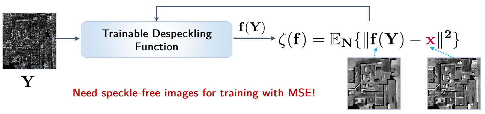
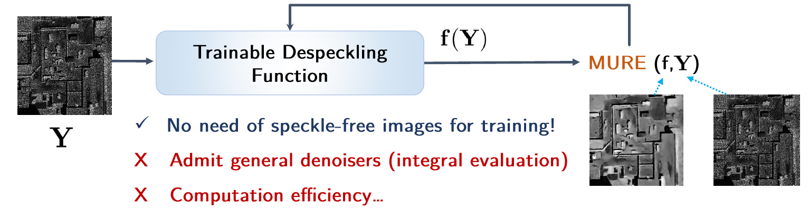
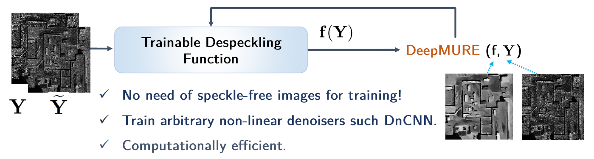
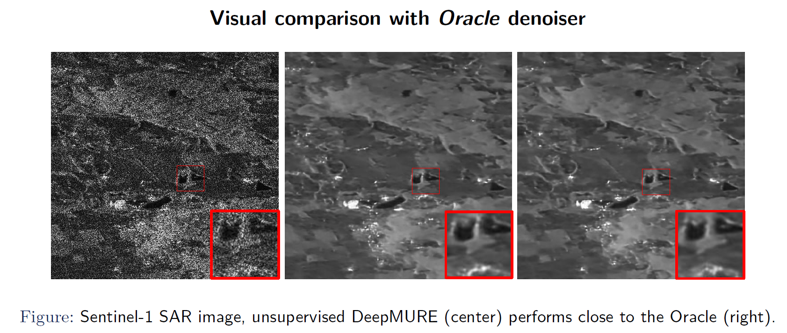
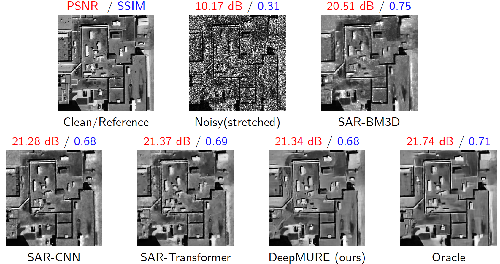
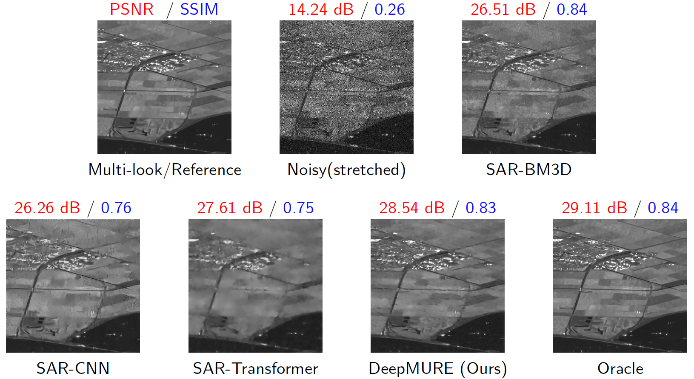
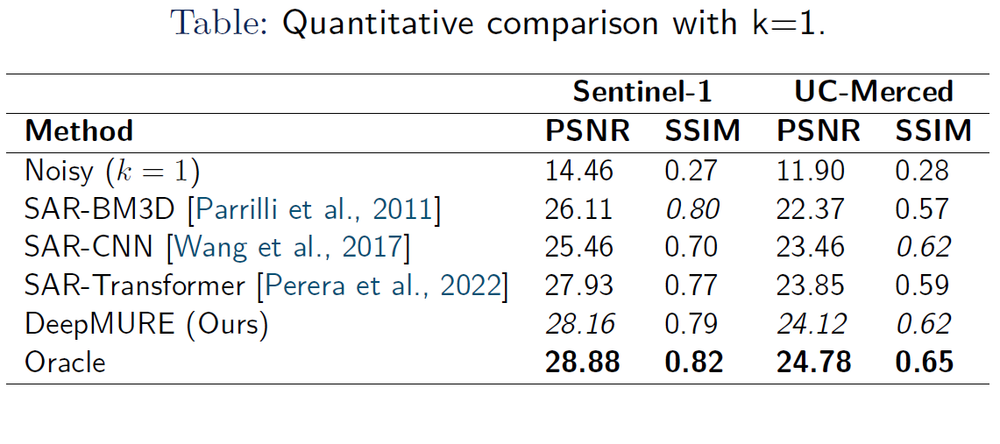
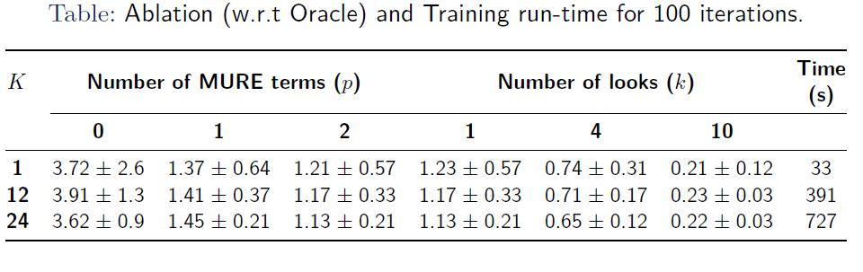

Deep Unsupervised Despeckling via Unbiased Risk Estimation
Abstract
Despeckling of Synthetic Aperture Radar (SAR) images has seen significant progress in recent years, largely driven by advancements in deep learning techniques. However, many of these approaches face challenges when applied to new SAR datasets, primarily due to their dependence on ground truth images, which are often unavailable for real-world sensors. In this paper, we address this limitation by extending the concept of unbiased risk estimation in the presence of Gamma-distributed multiplicative speckle. Specifically, we demonstrate that it is possible to train deep denoising networks without relying on ground truth data using our estimator. We introduce a new formulation of the Multiplicative Unbiased Risk Estimator (MURE) and present a computationally efficient Monte Carlo-based method that enables accurate estimation of the modified MURE cost, facilitating effective unsupervised training of deep neural networks from large datasets consisting solely of noisy SAR images. Experimental results on both synthetic datasets and real Sentinel-1 SAR images validate the suitability of our method for real-world applications. Even without ground truth, our method achieves performance that closely matches the Oracle-based denoiser and proves superior to the out-of-domain performance of popular supervised SAR despeckling methods.
MSE v/s MURE v/s DeepMURE
DeepMURE reformulates the Multiplicative Unbiased Risk Estimator and pairs it with a fast Monte-Carlo scheme that reliably approximates the revised cost, allowing deep networks to be trained in unsupervised fashion on vast, noisy SAR-image datasets.



Visual Results

Performance of the proposed DeepMURE on real SAR images w.r.t the Oracle performance.

Visual comparison of despeckling results on UC-Merced dataset sample.

Visual comparison of despeckling results on Sentinel-1 dataset sample.
Quantitative Results

Performance of the proposed DeepMURE on real SAR images w.r.t the Oracle performance.

Ablation study on the number of Monte-Carlo samples and number of divergence terms used for estimating the MURE cost.
BibTeX
@INPROCEEDINGS{11084619,
author={Gupta, Ashutosh and Seelamantula, Chandra Sekhar and Blu, Thierry and Dube, Nitant and Raman, Shanmuganathan},
booktitle={2025 IEEE International Conference on Image Processing (ICIP)},
title={Deep Unsupervised Despeckling With Unbiased Risk Estimation},
year={2025},
volume={},
number={},
pages={893-898},
keywords={Training;Deep learning;Monte Carlo methods;Costs;Noise reduction;Estimation;Artificial neural networks;Radar polarimetry;Computational efficiency;Synthetic aperture radar;Despeckling;SAR;multiplicative noise;deep learning;MURE},
doi={10.1109/ICIP55913.2025.11084619}}